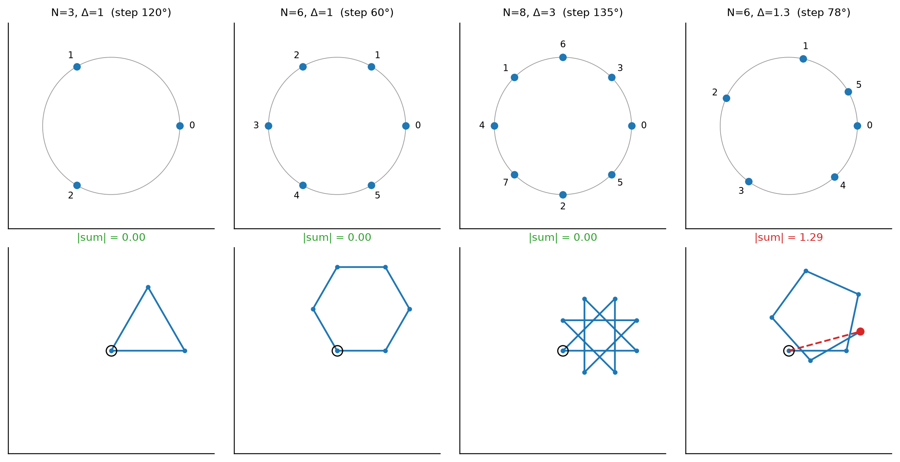
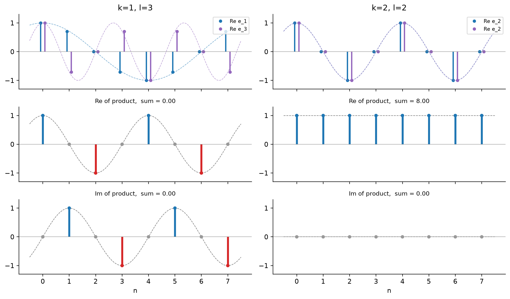
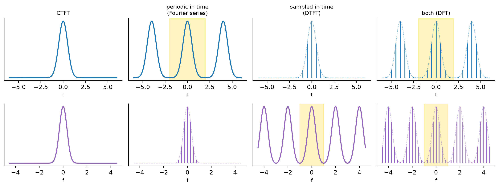
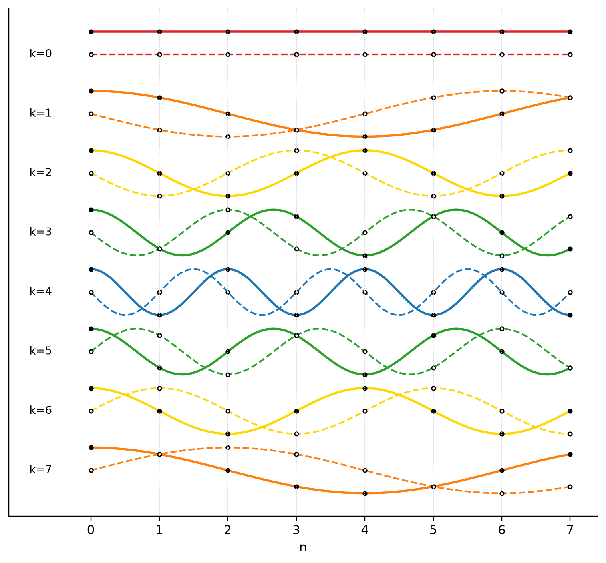

행렬 이론 (Matrix Theory)
Random Signal Theory — 행렬 기초와 연산, 기본 행렬 형태, DFT와 직교성, DFT 행렬과 기저 정현파, Toeplitz·Hankel·Circulant, 직교·유니터리 행렬, 역행렬과 Woodbury 항등식, 행렬식·트레이스·크로네커 곱, 행렬 미분, 고유분석, 특이값 분해
1 행렬 기초
\(m\times n\) 행렬은 다음과 같이 쓴다.
\[ A=\begin{pmatrix} A_{11} & A_{12} & \cdots & A_{1,n-1} & A_{1n}\\ A_{21} & A_{22} & \cdots & A_{2,n-1} & A_{2n}\\ \vdots & \vdots & \ddots & \vdots & \vdots\\ A_{m1} & A_{m2} & \cdots & A_{m,n-1} & A_{mn} \end{pmatrix} \]
- 주대각선(main diagonal): 정방행렬에서 좌상단→우하단, 원소 \(A_{ii}\).
- 반대각선(cross / anti-diagonal): 반대 방향 대각선, 원소 \(A_{n-i+1,\,i}\).
- 벡터: 열(column) 행렬 \(m\times 1\)을 가리키는 관례적 용어.
- 표기: 행렬은 굵은 대문자 \(\mathbf A,\mathbf B\), 벡터는 굵은 소문자 \(\mathbf a,\mathbf b\). 벡터 \(\mathbf a\)의 차원은 \(\dim(\mathbf a)\).
- \(\mathbb F\)는 실수체 \(\mathbb R\) 또는 복소수체 \(\mathbb C\)를 뜻한다.
2 행렬 연산
2.1 덧셈
같은 크기 \(m\times n\)끼리 원소별로 더한다.
\[[A+B]_{ij}=a_{ij}+b_{ij}\]
2.2 곱셈
\(A\in\mathbb F^{m\times r}\), \(B\in\mathbb F^{r\times n}\)이면 \(C=AB\in\mathbb F^{m\times n}\)이고
\[c_{ij}=\sum_{k=1}^{r}a_{ik}b_{kj}.\]
예를 들어
\[ \begin{pmatrix}a_{11}&a_{12}\\a_{21}&a_{22}\\a_{31}&a_{32}\end{pmatrix} \begin{pmatrix}b_{11}&b_{12}\\b_{21}&b_{22}\end{pmatrix} =\begin{pmatrix} a_{11}b_{11}+a_{12}b_{21} & a_{11}b_{12}+a_{12}b_{22}\\ a_{21}b_{11}+a_{22}b_{21} & a_{21}b_{12}+a_{22}b_{22}\\ a_{31}b_{11}+a_{32}b_{21} & a_{31}b_{12}+a_{32}b_{22} \end{pmatrix}. \]
| 성질 | 식 |
|---|---|
| 비가환 (일반적으로) | \(AB\neq BA\) |
| 분배법칙 | \(A(B+C)=AB+AC\) |
| 결합법칙 | \(A(BC)=(AB)C\) |
3 행렬 재배열: 켤레, 전치, 켤레 전치
- 복소 켤레 \(A^*\): 원소별 켤레, \([A^*]_{ij}=a_{ij}^*\).
- 전치 \(A^T\in\mathbb F^{n\times m}\): \([A^T]_{ij}=a_{ji}\).
- 곱의 전치: \((AB)^T=B^TA^T\).
- 켤레 전치 (Hermitian transpose): \(A^\dagger=(A^*)^T\), 즉 \([A^\dagger]_{ij}=a_{ji}^*\). 마찬가지로 \((AB)^\dagger=B^\dagger A^\dagger\).
곱의 전치 증명: \([(AB)^T]_{ij}=[AB]_{ji}=\sum_k a_{jk}b_{ki}=\sum_k [B^T]_{ik}[A^T]_{kj}=[B^TA^T]_{ij}\).
4 기본 행렬 형태 I
대각 행렬: 주대각선에만 0이 아닌 원소가 있다.
\[\mathrm{diag}(d_1,\dots,d_n)=\begin{pmatrix}d_1&0&\cdots&0\\0&d_2&\cdots&0\\\vdots&\vdots&\ddots&\vdots\\0&0&\cdots&d_n\end{pmatrix}\]
단위 행렬: \(I_n=\mathrm{diag}(1,\dots,1)\).
블록 대각 행렬: 대각선에 정방 블록이 놓이고 나머지는 0. 블록 \(A_k\)들의 크기는 서로 달라도 된다.
\[\begin{pmatrix}A_1&0&\cdots&0\\0&A_2&\cdots&0\\\vdots&\vdots&\ddots&\vdots\\0&0&\cdots&A_N\end{pmatrix}\]
5 기본 행렬 형태 II
교환(반전) 행렬 \(J\): 행/열 순서를 뒤집는다.
\[J_4=\begin{pmatrix}0&0&0&1\\0&0&1&0\\0&1&0&0\\1&0&0&0\end{pmatrix},\qquad J\mathbf x=(x_n,\dots,x_1)^T,\quad J^2=I.\]
하삼각 행렬 \(L\): 주대각선 및 그 아래에만 0이 아닌 원소. 상삼각 행렬 \(U\): 주대각선 및 그 위에만 0이 아닌 원소. 삼각 행렬의 행렬식은 대각 원소의 곱이다.
Vandermonde 행렬: 각 열이 공비 \(a_k\)인 등비수열이다.
\[A=\begin{pmatrix}1&1&\cdots&1\\a_0&a_1&\cdots&a_{n-1}\\a_0^2&a_1^2&\cdots&a_{n-1}^2\\\vdots&\vdots&\ddots&\vdots\\a_0^{m-1}&a_1^{m-1}&\cdots&a_{n-1}^{m-1}\end{pmatrix}\]
정방(\(m=n\))일 때 \(\det A=\prod_{0\le i<j\le n-1}(a_j-a_i)\)이므로 \(a_k\)들이 서로 다르면 가역이다. 이 사실은 아래 DFT에서 “\(N\)개의 서로 다른 주파수로 분해가 유일하다”는 근거가 된다. DFT 행렬은 \(a_k=e^{-j2\pi k/N}\)인 Vandermonde 행렬이다.
6 이산 푸리에 변환 (DFT)
6.1 정의
DFT는 길이 \(N\)인 복소 시퀀스 \(\{x_n\}_{n=0}^{N-1}\)를 \(\{X_k\}_{k=0}^{N-1}\)로 보낸다.
\[\text{DFT:}\quad X_k=\sum_{n=0}^{N-1}x_n\,e^{-j2\pi\frac{k}{N}n},\qquad k=0,\dots,N-1\]
\[\text{IDFT:}\quad x_n=\frac1N\sum_{k=0}^{N-1}X_k\,e^{\,j2\pi\frac{k}{N}n},\qquad n=0,\dots,N-1\]
(허수 단위를 \(i\)로 쓰기도 하고 \(j\)로 쓰기도 한다. 여기서는 \(j\)를 쓴다.)
Tip한 문장 요약
DFT는 길이 \(N\) 신호를 \(N\)개의 복소 정현파를 기저로 하는 좌표계로 바꿔 쓰는 변환이고, IDFT는 그 좌표로부터 원래 신호를 합성하는 과정이다. 정보를 버리거나 더하지 않고 표현만 바꾸므로 가역이다.
6.2 순방향 DFT는 “얼마나 닮았나”를 재는 내적
기저 벡터를
\[e_k[n]=e^{\,j2\pi\frac{k}{N}n},\qquad n=0,\dots,N-1\]
로 두자. \(e_k\)는 한 샘플마다 위상이 \(2\pi k/N\)씩 돌아가는 복소 정현파다. 그러면
\[X_k=\sum_n e_k[n]^*\,x_n=e_k^\dagger x,\]
즉 \(X_k\)는 \(x\)를 \(e_k\)에 사영(내적)한 값이다.
곱해지는 \(e^{-j2\pi kn/N}\)은 \(x_n\)의 위상을 샘플마다 일정하게 거꾸로 돌린다.
- \(x\) 안에 주파수 \(k\) 성분이 있으면, 그 성분의 위상 회전이 정확히 상쇄되어 모든 항이 같은 방향을 가리키고 보강 간섭으로 \(|X_k|\)가 커진다.
- 그렇지 않으면 항들이 원 위를 돌며 상쇄되어 \(X_k\approx0\)이다.
\(|X_k|\)는 주파수 \(k\) 성분의 세기, \(\arg X_k\)는 그 성분의 위상이다.
6.3 역변환이 성립하는 이유: 직교성
핵심 등식은
\[\sum_{n=0}^{N-1}e^{\,j2\pi\frac{(k-l)}{N}n}=N\,\delta_{kl}.\]
증명. \(r=e^{j2\pi(k-l)/N}\)이라 하자. \(k\neq l\) (둘 다 \(0,\dots,N-1\))이면 \(k-l\)이 \(N\)의 배수가 아니므로 \(r\neq1\)이고, \(r^N=e^{j2\pi(k-l)}=1\)이다. 등비급수 공식에 의해
\[\sum_{n=0}^{N-1}r^n=\frac{1-r^N}{1-r}=0.\]
\(k=l\)이면 모든 항이 1이므로 합은 \(N\)이다. \(\blacksquare\)
즉 서로 다른 임의의 두 기저는 내적이 0(직교) 이고, 자기 자신과의 내적은 \(N\) 이다. 결과가 \(k,l\) 각각이 아니라 차이 \(k-l\)에만 의존하므로, 어떤 쌍을 골라도 같은 논리가 적용된다.
이제 순방향 식을 IDFT에 대입하면
\[\frac1N\sum_kX_ke^{j2\pi\frac kNn}=\frac1N\sum_m x_m\underbrace{\sum_k e^{j2\pi\frac kN(n-m)}}_{N\delta_{nm}}=x_n.\]
직교성 덕분에 \(m=n\)인 항만 살아남고, \(1/N\)은 기저의 에너지 \(\|e_k\|^2=N\)을 보정한다. IDFT를
\[x=\sum_k\underbrace{\frac{X_k}{N}}_{\text{계수}}e_k\]
로 읽으면 “직교 기저 전개에서 계수 = (내적)/(기저의 노름²)”이라는 일반 규칙과 같다.
\(N=4\)에서 모든 쌍 확인. \(e_0=(1,1,1,1)\), \(e_1=(1,j,-1,-j)\), \(e_2=(1,-1,1,-1)\), \(e_3=(1,-j,-1,j)\).
| 쌍 | 내적 \(e_k^\dagger e_l\) |
|---|---|
| \(e_0,e_1\) | \(1+j-1-j=0\) |
| \(e_0,e_2\) | \(1-1+1-1=0\) |
| \(e_0,e_3\) | \(1-j-1+j=0\) |
| \(e_1,e_2\) | \(1+(-j)(-1)+(-1)(1)+(j)(-1)=1+j-1-j=0\) |
| \(e_1,e_3\) | \(1\cdot1+(-j)(-j)+(-1)(-1)+(j)(j)=1-1+1-1=0\) |
| \(e_2,e_3\) | \(1+(-1)(-j)+(1)(-1)+(-1)(j)=1+j-1-j=0\) |
\(\binom42=6\)개 쌍이 모두 0이다.
작은 예. \(x_n=e^{j2\pi mn/N}\) (순수한 주파수 \(m\))이면 \(X_k=\sum_ne^{j2\pi(m-k)n/N}=N\delta_{km}\). 좌표가 \(k=m\) 한 곳에만 \(N\)으로 서고, 역변환하면 \(\frac1N\cdot N\cdot e_m=x\)로 복원된다.
6.4 직교성의 기하학: 다각형이 닫힌다
내적 \(\sum_n r^n\)을 복소평면에서 보면, 단위원 위의 점 \(1,r,r^2,\dots,r^{N-1}\)을 머리-꼬리로 이어 붙인 경로의 끝점이다. \(r^N=1\)이면 \(N\)걸음 뒤 출발점으로 정확히 돌아와 다각형이 닫히고, 닫힌 다각형의 변 벡터 합은 0이다.
- \(N=3\), \(\Delta=k-l=1\): 한 스텝 120°, 정삼각형이 닫힌다 → 합 0.
- \(N=4\): 정사각형. \(\Delta=2\)이면 180°씩 왕복하지만 역시 닫힌다.
- \(N=8\), \(\Delta=3\): 별 모양(여러 바퀴)이지만 닫힌다.
- \(\Delta\)가 정수가 아니면 \(r^N\neq1\)이라 다각형이 열리고 합이 0이 아니다.
직교성은 각도 하나의 값이 아니라 “한 스텝 회전각 × \(N\)이 360°의 정수배인가” 로 결정된다. 120°이든 90°이든 이 조건만 만족하면 직교다.
6.5 왜 \(N\)개의 주파수로 분해하는가
6.5.1 미지수 \(N\)개 = 방정식 \(N\)개
쪼개지는 대상은 원소 하나하나가 아니라 시퀀스 전체(벡터 하나) 이다. 다만 합성 쪽에서 보면 각 원소 \(x_n\)은 \(N\)개 주파수 성분이 그 시점에서 기여한 값의 합이다.
길이 \(N\) 시퀀스는 숫자 \(N\)개, 즉 자유도 \(N\)이다. 이를 정현파들의 합 \(x_n=\sum_k c_kz_k^n\)으로 쓰려면
- 계수가 \(N\)개보다 적으면 \(N\)개의 값을 모두 맞출 수 없다 (방정식이 미지수보다 많음).
- 계수가 \(N\)개보다 많으면 해가 무수히 많아 분해가 유일하지 않다.
계수 \(N\)개일 때 이 식은 정방 Vandermonde 시스템이고, \(z_k\)가 서로 다르면 해가 정확히 하나다.
6.5.2 줄이면 안 되는 이유: 영공간
\(X=Wx\)에서 \(W\in\mathbb C^{M\times N}\), \(M<N\)이면 \(\mathrm{rank}\,W\le M<N\)이므로 영공간이 존재한다: \(\exists\,x\neq0,\ Wx=0\). 서로 다른 \(x\)가 같은 \(X\)로 가므로 복원이 불가능하다. 예컨대 \(k=0,\dots,N-2\)만 쓰면 \(e_{N-1}\) 방향 성분은 통째로 사라진다.
6.5.3 정확히 \(N\)개인 이유: 주기성과 aliasing
\(e_{k+N}[n]=e^{j2\pi(k+N)n/N}=e_k[n]\,e^{j2\pi n}=e_k[n]\)이다. 정수 샘플 위에서 주파수 \(k\)와 \(k+N\)은 구별할 수 없다(aliasing). 서로 다른 기저는 \(N\)개뿐이고 이들은 모두 직교하므로, 정확히 \(\mathbb C^N\)의 직교 기저가 된다.
DFT는 \(x\)를 주기 \(N\)으로 반복되는 신호로 간주한다. 주기 \(N\) 신호에 들어갈 수 있는 정현파는 기본 주파수 \(1/N\)의 정수배 조화파뿐이고, 이산 시간에서는 그것이 \(N\)개에서 겹쳐 돌아온다.
6.5.4 왜 하필 등간격 주파수인가
서로 다른 \(N\)개 주파수이기만 하면 Vandermonde가 가역이라 “분해”는 가능하다. DFT가 \(z_k=e^{j2\pi k/N}\) (단위원 위 등간격)을 고르는 이유는 직교성 때문이다. 직교 기저이면 계수를 연립방정식 없이 내적 한 번으로 구하고, 역행렬이 \(W^\dagger\) (정규화 기준)로 공짜로 주어진다.
6.5.5 늘리면: zero-padding과 frame
\(x\) 뒤에 0을 붙여 길이 \(L>N\)으로 만들고 \(L\)-point DFT를 하면
\[X^{(L)}_k=\sum_{n=0}^{N-1}x_ne^{-j2\pi kn/L}=X(e^{j\omega})\Big|_{\omega=2\pi k/L},\]
즉 DTFT를 더 촘촘히 샘플링한 것이다. DTFT는 \(N\)개 값으로 이미 결정되므로 이것은 보간이다. 스펙트럼이 부드럽게 보이고 피크 위치를 읽기 쉬워지지만, 두 가까운 주파수를 구분하는 분해능은 창 길이 \(N\)이 결정하므로 좋아지지 않는다.
이때 \(L\)개 벡터 \(\{e^{j2\pi kn/L}\}_{n=0}^{N-1}\)는 \(\mathbb C^N\)의 과완비 집합(frame) 이다. \(\Delta=k-l\)이 (\(N\) 격자 기준) 정수가 아니면
\[\sum_{n=0}^{N-1}e^{j2\pi\Delta n/N}=\frac{1-e^{j2\pi\Delta}}{1-e^{j2\pi\Delta/N}}\neq0\]
(Dirichlet 커널) 이므로 직교가 깨진다. 격자 위에서만 0이 된다는 것이 DFT 격자가 \(N\)개인 근본 이유다.
6.5.6 줄여도 되는 경우: 사전 지식
\(x\)가 \(K<N\)개 주파수만 가진다는 것을 알면 그만큼만으로 충분하다(대역 제한 신호의 저역 필터링, 압축, 희소 스펙트럼의 compressed sensing). 정보를 버려도 되는 것은 신호 모델이 그 부분이 비어 있다고 보장할 때뿐이다.
| 경우 | 성질 |
|---|---|
| \(M<N\) (일반 \(x\)) | 영공간 존재, 복원 불가 |
| \(M=N\), 정수 \(k\) | 직교 기저, 유일·가역 |
| \(M>N\) (zero-padding) | 과완비 frame, 중복, 스펙트럼 보간 |
| \(M<N\) + 희소/대역제한 가정 | 모델 덕분에 복원 가능 |
6.6 흔한 오해: “원 위의 \(N\)개 화살표는 직교하지 않는다”
원을 6등분하면 원점에서 나가는 화살표 6개가 60° 간격으로 생기고, 이들은 분명히 직교하지 않는다. 그러나 그 그림에서 원 위의 점은 서로 다른 기저 벡터가 아니라, 기저 벡터 하나의 성분들이다.
| 원 위의 점의 의미 | |
|---|---|
| 잘못된 그림 | 기저 벡터 하나하나 (2차원 평면 안의 화살표) |
| 실제 DFT | 기저 \(e_k\) 한 개의 \(N\)개 성분 \(e_k[0],\dots,e_k[N-1]\) |
- 2차원 평면에서는 서로 직교하는 벡터가 최대 2개뿐이다. 6개를 욱여넣으면 직교가 불가능해 보인다.
- DFT 기저는 \(\mathbb C^N\), 즉 \(N\)차원 공간의 벡터다. \(N=6\)이면 6차원이고, 서로 직교하는 벡터가 6개까지 들어간다.
- 직교성은 “성분 \(N\)개짜리 벡터 두 개를 같은 위치끼리 곱해서 더하면 0”이라는 뜻이며, 이것이 \(N\)차원 공간에서의 직각이다.
가장 작은 \(N=2\)에서는 \(e_0=(1,1)\), \(e_1=(1,-1)\)이 실수이고 실제로 평면 위에서 직각이다. \(N\ge4\)부터는 성분이 복소수이고 차원이 커서 화살표로는 그릴 수 없지만 같은 계산이 성립한다.
시각화 방법의 정리.
| 방법 | 보이는 것 | 한계 |
|---|---|---|
| 화살표 (\(N\)차원) | 직각의 기하학적 의미 | 실수 \(N\le3\)에서만 가능 |
| 파형 곱 | 양·음의 상쇄 | 복소 기저는 실수부·허수부를 나눠 봐야 함 |
| 다각형 닫힘 | 내적이 0이 되는 이유 | 각도가 아니라 합을 봄 |
“직각”이라는 기하 그림은 \(N\)차원이라 포기해야 하지만, “내적이 0”이라는 대수적 사실은 파형과 다각형으로 충분히 시각화된다.
6.7 파형으로 보는 직교성
기저 \(e_k\)의 성분을 \(n\)축 위에 그리면 샘플링된 cos/sin 파형이다. 내적은 “같은 \(n\)끼리 곱해서 더하기”이므로 두 파형을 곱한 막대들의 높이 합이다.
\[e_k^\dagger e_l=\sum_n e^{j2\pi(l-k)n/N}=\sum_n\cos\!\Big(\tfrac{2\pi(l-k)n}{N}\Big)+j\sum_n\sin\!\Big(\tfrac{2\pi(l-k)n}{N}\Big)\]
- \(k\neq l\): 곱은 주파수 \(l-k\neq0\)인 순수 정현파이고, \(N\)개 샘플 동안 정수 주기를 정확히 채우므로 양수와 음수가 같은 양만큼 생겨 합이 0이다. 실수부·허수부 모두 0이어야 내적이 0이다.
- \(k=l\): 곱이 모두 \(\cos0=1\)이라 위로 쌓여 합이 \(N\)이다. (실수 cos 기저끼리는 \(\cos^2\) 꼴이라 \(N/2\).)

6.8 정규직교(orthonormal) 버전
- Orthogonal(직교): 서로 다른 기저의 내적이 0.
- Orthonormal(정규직교): 직교 + 각 기저의 길이가 1.
표준 기저는 \(\|e_k\|=\sqrt N\)이므로 직교이지만 정규직교가 아니다. \(u_k=e_k/\sqrt N\)으로 두면 \(u_k^\dagger u_l=\delta_{kl}\)이고, 변환은 양방향 모두 \(1/\sqrt N\)이 붙는다.
\[X_k=\frac1{\sqrt N}\sum_nx_ne^{-j2\pi\frac kNn},\qquad x_n=\frac1{\sqrt N}\sum_kX_ke^{\,j2\pi\frac kNn}\]
표준 버전은 (정방향 1, 역방향 \(1/N\)), 정규직교 버전은 (\(1/\sqrt N\), \(1/\sqrt N\))이다. 두 스케일의 곱은 \(1/N\)으로 같다. 어디에 두는지는 관례다.
정규직교 버전에서 달라지는 점:
- 대칭적 역변환. 기저 길이가 1이라 “내적 ÷ 노름²”의 나눗셈이 필요 없고, 역행렬이 곧 \(W^\dagger\)이다.
- Parseval (에너지 보존). \(\|X\|^2=x^\dagger W^\dagger Wx=\|x\|^2\). 표준 버전은 \(W^\dagger W=NI\)라 \(\|X\|^2=N\|x\|^2\).
- 기하학적으로 순수한 회전. 유니터리 변환은 길이와 각도를 바꾸지 않고 좌표축만 돌린다. 표준 DFT는 회전에 \(\sqrt N\)배 스케일을 곱한 것이다.
예: \(N=2\), \(x=(1,0)\)이면 표준 \(X=(1,1)\)로 \(\|X\|^2=2\), 정규직교 \(X=(\tfrac1{\sqrt2},\tfrac1{\sqrt2})\)로 \(\|X\|^2=1=\|x\|^2\).
무선통신에서의 의미. \(x_n\)이 분산 \(\sigma^2\)인 i.i.d. 잡음이면 표준 DFT는 \(\mathrm{Var}(X_k)=N\sigma^2\), 정규직교 DFT는 \(\mathrm{Var}(X_k)=\sigma^2\)이다. OFDM처럼 시간·주파수 영역의 전력/SNR을 일관되게 비교할 때 정규직교 버전이 편하다.
6.9 인덱스 관례 (\(0\dots N-1\) vs \(1\dots N\))
| 관례 | 범위 | 주로 쓰는 곳 |
|---|---|---|
| 0-based | \(n,k=0,\dots,N-1\) | 수식, Python(NumPy) |
| 1-based | \(n,k=1,\dots,N\) | MATLAB, Julia |
DFT의 지수는 0부터 센 번호로 쓰인 식이다(첫 샘플이 위상 0). 1-based 번호를 쓰면 지수에 \((n-1),(k-1)\)을 넣어야 한다.
\[X_k=\sum_{n=1}^{N}x_ne^{-j2\pi\frac{(k-1)(n-1)}{N}},\qquad k=1,\dots,N\]
MATLAB fft의 정의가 이 형태다. 지수를 고치지 않고 \(e^{-j2\pi kn/N}\)을 1-based에 그대로 쓰면 (\(k=k'+1\), \(n=n'+1\))
\[e^{-j2\pi\frac{(k'+1)(n'+1)}{N}}=e^{-j2\pi\frac{k'n'}{N}}\cdot e^{-j2\pi\frac{k'}{N}}\cdot e^{-j2\pi\frac{n'}{N}}\cdot e^{-j2\pi/N}\]
가 되어 불필요한 위상 인자가 붙고, 시간 쪽 인자는 \(x\)에 주파수 1짜리 정현파를 곱하는 것이라 스펙트럼이 한 칸 밀린다. 예: \(x=(1,0,0,0)\)이면 올바른 DFT는 \(X_k=1\) (평탄)인데, 보정하지 않으면 \(X_k=e^{-j2\pi k/4}\) (시간 지연의 위상 기울기)가 된다.
근본 이유: \(e^{-j2\pi kn/N}\)은 \(n,k\) 모두에 대해 주기 \(N\) 이므로 연속한 \(N\)개 정수면 어느 범위든 서로 다른 값을 한 번씩 덮는다(\(-N/2,\dots,N/2-1\)로 두는 fftshift 관례도 가능). 다만 어느 샘플을 시간 0으로 정의하느냐는 위상에 영향을 주므로 기준점이 유지되도록 지수를 함께 맞춰야 한다(“consistent phases”).
6.10 CTFT → 푸리에 급수 → DTFT → DFT
네 가지 변환은 다음 두 쌍대 규칙으로 이어진다.
| 한쪽 영역에서 | 반대쪽 영역에서 |
|---|---|
| 주기 \(P\)로 반복 | 간격 \(1/P\)의 이산 선 |
| 간격 \(T_s\)로 샘플링 | 주기 \(f_s=1/T_s\)로 반복 |
직관: 시간 신호를 주기 \(P\)로 반복하면 그 안에 들어갈 수 있는 정현파는 주파수가 \(1/P\)의 정수배인 것뿐이다 → 스펙트럼이 이산. 시간을 \(T_s\)로 샘플링하면 주파수 \(f\)와 \(f+1/T_s\)가 샘플 위에서 구별되지 않는다(aliasing) → 스펙트럼이 주기적.
- CTFT: 시간 연속·비주기 ↔︎ 주파수 연속·비주기.
- 푸리에 급수: 시간 주기 반복 ↔︎ 주파수 이산 선.
- DTFT: 시간 샘플링(Dirac comb) ↔︎ 주파수 주기적 (\(e^{j\omega}\) 표기).
- DFT: 둘 다 적용 → 시간 이산·주기 ↔︎ 주파수 이산·주기. DFT는 DTFT의 한 주기를 샘플링하고, IDFT는 시간 영역의 한 주기를 복원한다. FFT는 이를 효율적으로 계산하는 알고리즘이다.
정리하면 “주기적 ↔︎ 이산”, “비주기 ↔︎ 연속”이 짝을 이룬다.
4단계에서 \(N\)이 나오는 이유가 그대로 드러난다.
\[N=\frac{P}{T_s}=\frac{f_s}{1/P}\]
시간 쪽 한 주기 안의 샘플 수와 주파수 쪽 한 주기 안의 선 수가 같은 \(N\) 이다. 입력 \(N\)개와 출력 \(N\)개가 대응되는 구조가 여기서 나온다.

6.11 DFT 행렬과 기저 정현파
6.11.1 행렬 정의
\[X=Wx,\qquad W_{k,n}=\frac1{\sqrt N}\,\omega^{kn},\qquad \omega=e^{-j2\pi/N}.\]
\(W\)의 각 행은 샘플링된 복소 정현파이고, IDFT는 \(W^\dagger\)를 쓴다. 열(행)들이 정규직교이므로 \(W^\dagger W=I\) (유니터리).
작은 \(N\)의 예:
\[W_2=\frac1{\sqrt2}\begin{pmatrix}1&1\\1&-1\end{pmatrix},\qquad W_4=\frac12\begin{pmatrix}1&1&1&1\\1&-j&-1&j\\1&-1&1&-1\\1&j&-1&-j\end{pmatrix}\]
\(N=8\)이면 \(\omega=e^{-j\pi/4}\)의 거듭제곱들이 들어간다.
6.11.2 기저 정현파 그림 읽기
\(X=Wx\)에서 \(W\)의 \(k\)번째 행을 가로(\(n\) 방향)로 읽으면 주파수 \(k\)인 이산 정현파 샘플 \(N\)개다. DFT는 \(x\)를 이 기저 함수들에 사영해서 \(X[k]\)를 얻는다: \(X[k]=\sum_nW_{kn}x[n]\)은 \(x\)와 \(k\)번째 행 파형의 상관이다.
- \(k=0\): 상수(직류).
- \(k=1,\dots,N/2\): 8샘플 동안 1, 2, 3, 4바퀴 도는 정현파. \(k\)가 클수록 빠르다.
- \(k=N/2\): \(+1,-1,+1,\dots\)로 이산 신호가 표현할 수 있는 가장 빠른 진동(Nyquist).
- \(k>N/2\): \(k'=N-k\)와 같은 모양(아래 켤레 대칭).

6.11.3 실선과 점선 사이의 90° 위상차
\[W_{kn}\propto e^{-j\theta}=\underbrace{\cos\theta}_{\text{실수부(실선)}}+j\underbrace{(-\sin\theta)}_{\text{허수부(점선)}},\qquad\theta=\frac{2\pi kn}{N}\]
\(-\sin\theta=\cos(\theta+\pi/2)\)이므로 점선은 실선을 90°(1/4주기) 앞으로 민 것이다. 복소 지수는 단위원 위를 도는 점이고, 이를 실수축에 사영하면 cos, 허수축에 사영하면 sin이며, 두 축이 수직이라 두 사영 파형은 항상 90° 어긋난다.
\(N=8\), \(k=1\):
| \(n\) | 0 | 1 | 2 | 3 | 4 | 5 | 6 | 7 |
|---|---|---|---|---|---|---|---|---|
| 실수부 \(\cos\frac{\pi n}{4}\) | 1 | .71 | 0 | −.71 | −1 | −.71 | 0 | .71 |
| 허수부 \(-\sin\frac{\pi n}{4}\) | 0 | −.71 | −1 | −.71 | 0 | .71 | 1 | .71 |
\(\mathrm{Im}[n]=\mathrm{Re}[n+2]\)이다. 일반적으로 어긋남은 \(N/(4k)\) 샘플이다.
왜 둘 다 필요한가. 주파수 \(\theta\)의 임의 정현파는
\[A\cos(\theta+\varphi)=A\cos\varphi\cos\theta-A\sin\varphi\sin\theta\]
이므로 같은 주파수의 cos와 sin 두 성분이 있어야 진폭과 위상을 모두 담는다. 그래서 \(X_k\)는 복소수다.
\[X_k=\underbrace{\sum_nx_n\cos\theta}_{\text{동위상(I)}}-j\underbrace{\sum_nx_n\sin\theta}_{\text{직교위상(Q)}}\]
6.11.4 켤레 대칭과 \(W\)의 대칭성
- \(e^{-j2\pi(N-k)n/N}=e^{+j2\pi kn/N}\)이므로 \(k\)행과 \(N-k\)행은 서로 켤레: 실수부는 같고 허수부는 부호만 반대. 샘플 위에서 \(k=5\)는 “\(-3\)” 주파수와 구별되지 않는다(aliasing).
- \(W_{kn}=W_{nk}\), 즉 \(W=W^T\)이므로 행으로 읽든 열로 읽든 같은 정현파다. 열 \(n\)은 “시점 \(n\)에서 모든 주파수 성분이 갖는 값”으로도 읽힌다.
7 추가 행렬 형태
7.1 대칭 / Hermitian
\(A^T=A\) (실수) 또는 \(A^\dagger=A\) (복소). 원소가 주대각선을 기준으로 거울 대칭이다.
\[A=\begin{pmatrix}a&b&c\\b&d&e\\c&e&f\end{pmatrix}\]
공분산 행렬이 대표적인 예다.
7.2 Toeplitz
각 대각선을 따라 값이 일정하다: \([T]_{ij}=t_{i-j}\).
\[T=\begin{pmatrix}t_0&t_{-1}&t_{-2}&\cdots&t_{-(n-1)}\\t_1&t_0&t_{-1}&\cdots&t_{-(n-2)}\\t_2&t_1&t_0&\cdots&t_{-(n-3)}\\\vdots&\vdots&\vdots&\ddots&\vdots\\t_{n-1}&t_{n-2}&t_{n-3}&\cdots&t_0\end{pmatrix}\]
광의 정상(WSS) 과정의 자기상관 행렬 \([R]_{ij}=r(i-j)\)가 Toeplitz (게다가 Hermitian)이다.
7.3 Hankel
반대각선을 따라 값이 일정하다: \([H]_{ij}=h_{i+j}\) (인덱스 이동 허용).
\[H=\begin{pmatrix}h_0&h_1&h_2&\cdots&h_{n-1}\\h_1&h_2&h_3&\cdots&h_n\\h_2&h_3&h_4&\cdots&h_{n+1}\\\vdots&\vdots&\vdots&\ddots&\vdots\\h_{n-1}&h_n&h_{n+1}&\cdots&h_{2n-2}\end{pmatrix}\]
\(JT\) (Toeplitz의 행 반전)는 Hankel이다. 정방 Hankel은 정의상 대칭이다.
7.4 컨볼루션의 Toeplitz 표현
유한 길이 컨볼루션 \(y(n)=\sum_m h(m)x(n-m)\)은 Toeplitz 곱으로 쓸 수 있다.
\[\underbrace{\begin{pmatrix}y(0)\\y(1)\\\vdots\\y(N-1)\end{pmatrix}}_{\mathbf y}=\underbrace{\begin{pmatrix}h(0)&0&\cdots&0\\h(1)&h(0)&\cdots&0\\\vdots&\vdots&\ddots&\vdots\\h(M-1)&h(M-2)&\cdots&h(0)\end{pmatrix}}_{T(h)}\underbrace{\begin{pmatrix}x(0)\\x(1)\\\vdots\\x(N-1)\end{pmatrix}}_{\mathbf x}\]
\(x\)가 \(n<0\)에서 0이라 하삼각 Toeplitz다(인과 필터). 위 형태는 출력의 처음 \(N\)개만 남긴 것이고, 전체 선형 컨볼루션 출력(\(N+M-1\)개)이 필요하면 \((N+M-1)\times N\) 크기의 키 큰 Toeplitz 행렬이 된다.
7.5 고유값과 고유벡터 (복습)
행렬 \(A\)는 벡터를 다른 벡터로 보내는 선형 변환이다. 대부분의 벡터는 방향이 바뀌지만 특별한 방향의 벡터는 방향은 그대로이고 길이만 \(\lambda\)배가 된다.
\[A\mathbf v=\lambda\mathbf v\qquad(\mathbf v\neq0)\]
\(\lambda\)가 복소수이면 “길이 \(|\lambda|\)배 + 위상 \(\arg\lambda\) 회전”이다. \((A-\lambda I)\mathbf v=0\)이 자명하지 않은 해를 가지려면 \(\det(A-\lambda I)=0\)이어야 한다.
예. \(A=\begin{pmatrix}2&1\\1&2\end{pmatrix}\)이면 \((2-\lambda)^2-1=0\)에서 \(\lambda=3,1\).
- \(\lambda=3\): \(\mathbf v=(1,1)^T\), 실제로 \(A(1,1)^T=(3,3)^T\).
- \(\lambda=1\): \(\mathbf v=(1,-1)^T\).
대각화. 독립 고유벡터를 열로 모아 \(V\), \(\Lambda=\mathrm{diag}(\lambda_i)\)이면 \(AV=V\Lambda\), 즉
\[A=V\Lambda V^{-1}.\]
- \(V^{-1}\): 고유벡터 좌표계로 이동
- \(\Lambda\): 각 좌표를 독립적으로 \(\lambda_i\)배
- \(V\): 원래 좌표계로 복귀
행렬의 섞임이 고유 좌표계에서는 “축마다 따로 곱하기”가 된다. \(A^p=V\Lambda^pV^{-1}\), \(A^{-1}=V\Lambda^{-1}V^{-1}\). 위 예의 \(V=\frac1{\sqrt2}\begin{pmatrix}1&1\\1&-1\end{pmatrix}\)은 \(N=2\) DFT 행렬이다 — 이것이 다음 절의 예고다.
7.6 Circulant 행렬
각 행이 앞 행의 원형 이동이다. \(C=\mathrm{circ}(c_0,\dots,c_{n-1})\).
\[C=\begin{pmatrix}c_0&c_{n-1}&c_{n-2}&\cdots&c_1\\c_1&c_0&c_{n-1}&\cdots&c_2\\c_2&c_1&c_0&\cdots&c_3\\\vdots&\vdots&\vdots&\ddots&\vdots\\c_{n-1}&c_{n-2}&c_{n-3}&\cdots&c_0\end{pmatrix},\qquad C_{ij}=c_{(i-j)\bmod n}\]
첫 열이 \((c_0,c_1,\dots,c_{n-1})^T\), 첫 행이 \((c_0,c_{n-1},\dots,c_1)\)이다. Circulant는 Toeplitz의 특수한 경우다.
표현 1: 이동 행렬의 다항식. 한 칸 순환 이동 \(S\), \((S\mathbf x)_i=x_{(i-1)\bmod n}\)를 두면
\[C=\sum_{m=0}^{n-1}c_mS^m.\]
표현 2: 원형 컨볼루션.
\[(C\mathbf x)_i=\sum_jc_{(i-j)\bmod n}\,x_j=(\mathbf c\circledast\mathbf x)_i.\]
Circulant 행렬을 곱하는 것은 필터 \(\mathbf c\)로 원형 컨볼루션하는 것이다. OFDM의 cyclic prefix는 채널의 선형 컨볼루션을 이 원형 컨볼루션으로 바꿔 준다.
7.6.1 고유벡터는 DFT 벡터
\(\omega=e^{-j2\pi/n}\), \(\mathbf v_k=\frac1{\sqrt n}(1,\omega^k,\dots,\omega^{k(n-1)})^T\), 즉 \(v_k[i]=\omega^{ki}/\sqrt n\).
이동 행렬에 작용:
\[(S\mathbf v_k)_i=v_k[i-1]=\frac{\omega^{k(i-1)}}{\sqrt n}=\omega^{-k}v_k[i]\ \Rightarrow\ S\mathbf v_k=\omega^{-k}\mathbf v_k\]
(\(i=0\)에서도 \(\omega^{kn}=1\)이라 성립.) 복소 정현파를 한 칸 지연시켜도 같은 정현파에 위상 인자만 곱해진다. 정현파는 이동에 대해 방향이 변하지 않는 벡터다.
Circulant에 작용:
\[C\mathbf v_k=\sum_mc_mS^m\mathbf v_k=\underbrace{\Big(\sum_{m=0}^{n-1}c_m\,\omega^{-km}\Big)}_{\lambda_k}\mathbf v_k\]
핵심은 고유벡터가 \(\mathbf c\)와 무관하다는 것이다. 모든 circulant 행렬이 같은 고유벡터(DFT 벡터)를 공유하고, \(\mathbf c\)는 고유값만 결정한다.
7.6.2 고유값 = 첫 행의 DFT (인덱스 짝짓기 주의)
\(C_{ij}=c_{(i-j)}\) 관례에서 첫 행 \(r_j=c_{-j}\)의 DFT는
\[\sum_jr_j\,\omega^{kj}=\sum_jc_{-j}\,\omega^{kj}=\sum_mc_m\,\omega^{-km}=\lambda_k,\]
즉 \(\mathbf v_k\)의 고유값은 첫 행의 DFT의 \(k\)번째 값이다.
한편 켤레 벡터 \(\mathbf v_k^*\) (성분 \(\omega^{-ki}\))도 고유벡터이며 \(S\mathbf v_k^*=\omega^{k}\mathbf v_k^*\)이므로 고유값은 \(\sum_mc_m\omega^{km}\), 즉 첫 열의 DFT \(\hat c_k\)다. 두 표현은 \(k\leftrightarrow -k\) 짝짓기만 다르고 고유값 집합은 같다. 첫 행을 \((c_0,c_1,\dots,c_{n-1})\)로 정의하는(전치) 관례에서는 \(\mathbf v_k\)의 고유값이 \(\sum_mc_m\omega^{km}\)가 된다. 식을 쓸 때는 행렬 관례와 고유벡터의 부호를 함께 확인해야 한다.
\(n=3\) 확인: \(C=\begin{pmatrix}c_0&c_2&c_1\\c_1&c_0&c_2\\c_2&c_1&c_0\end{pmatrix}\), \(\mathbf v_1\propto(1,\omega,\omega^2)^T\)이면 첫 성분은 \(c_0+c_2\omega+c_1\omega^2=c_0+c_1\omega^{-1}+c_2\omega^{-2}\) (\(\omega^3=1\)) \(=\sum_mc_m\omega^{-m}\).
7.6.3 DFT에 의한 대각화
\(\mathbf v_k\)를 열로 모은 행렬은 (\(W\)가 대칭이므로) 정규직교 DFT 행렬 \(W\) 자체다. 따라서
\[C=W\,\Lambda\,W^\dagger,\qquad \Lambda=\mathrm{diag}(\lambda_0,\dots,\lambda_{n-1}).\]
같은 내용을 첫 열의 DFT \(\hat c=\sqrt n\,W\mathbf c\)로 쓰면
\[C=W^\dagger\,\mathrm{diag}(\hat c)\,W\quad\Longleftrightarrow\quad W(\mathbf c\circledast\mathbf x)=\hat c\odot(W\mathbf x).\]
- \(W\mathbf x\): 입력을 정현파 기저로 분해 (스펙트럼 분석)
- 주파수 \(k\) 성분마다 복소수 \(\hat c_k\)를 곱함 (\(|\hat c_k|\)=이득, \(\arg\hat c_k\)=위상 이동)
- \(W^\dagger\): 합성하여 시간 영역으로 복귀
이것이 원형 컨볼루션 정리(시간 영역 컨볼루션 ↔︎ 주파수 영역 원소별 곱)를 행렬 언어로 쓴 것이다. \(\hat c_k\)는 필터의 주파수 응답이다.
7.7 직교 행렬과 유니터리 행렬
둘 다 열(행)들이 정규직교 기저를 이루어 길이와 각도를 보존하는 변환이다. 차이는 성분이 실수냐 복소수냐이고, 그에 따라 전치(\(^T\)) 대신 켤레 전치(\(^\dagger\))를 쓴다.
| Orthogonal | Unitary | |
|---|---|---|
| 성분 | 실수 \(Q\in\mathbb R^{n\times n}\) | 복소수 \(U\in\mathbb C^{n\times n}\) |
| 정의 | \(Q^TQ=QQ^T=I\) | \(U^\dagger U=UU^\dagger=I\) |
| 역행렬 | \(Q^{-1}=Q^T\) | \(U^{-1}=U^\dagger\) |
| 보존 | \(\|Q\mathbf x\|=\|\mathbf x\|\) | \(\|U\mathbf x\|=\|\mathbf x\|\) |
| 행렬식 | \(\det Q=\pm1\) | \(|\det U|=1\) |
| 고유값 | \(|\lambda|=1\) | \(|\lambda|=1\) |
| 기하 의미 | 회전 또는 반사 | 복소 공간의 “회전” |
실수 행렬에서는 \(Q^\dagger=Q^T\)이므로 orthogonal은 unitary의 실수 특수 경우다.
왜 복소수에서는 켤레 전치인가. 복소 벡터의 길이는 \(\|\mathbf x\|^2=\sum|x_i|^2=\mathbf x^\dagger\mathbf x\)이다. 그냥 전치를 쓰면 \(\mathbf x=(1,j)^T\)에서 \(\mathbf x^T\mathbf x=1+j^2=0\)이 되어 길이 0이 아닌 벡터가 “길이 0”이 된다.
길이·내적 보존 유도. \(U^\dagger U=I\)이면
\[\|U\mathbf x\|^2=\mathbf x^\dagger U^\dagger U\mathbf x=\|\mathbf x\|^2,\qquad\langle U\mathbf x,U\mathbf y\rangle=\mathbf x^\dagger U^\dagger U\mathbf y=\langle\mathbf x,\mathbf y\rangle.\]
열 조건. \(U^\dagger U=I\)의 \((j,k)\) 원소는 \(\mathbf u_j^\dagger\mathbf u_k=\delta_{jk}\). 즉 정규직교 기저를 열로 모은 행렬이다.
고유값의 크기가 1인 이유. \(U\mathbf v=\lambda\mathbf v\)이면 \(\|\mathbf v\|=\|U\mathbf v\|=|\lambda|\|\mathbf v\|\).
Warning이름의 함정
“Orthogonal matrix”는 이름과 달리 열이 정규직교(orthonormal) 여야 한다. 열이 직교하기만 하고 길이가 1이 아니면 \(Q^TQ=D\) (대각)이 되어 orthogonal matrix가 아니다.
예.
- 2D 회전 \(Q=\begin{pmatrix}\cos\theta&-\sin\theta\\\sin\theta&\cos\theta\end{pmatrix}\), \(\det Q=1\). 반사 \(\mathrm{diag}(1,-1)\)은 \(\det=-1\).
- \(W_2\)는 실수라 orthogonal이기도 하다. \(N=4\)부터는 복소 성분이 나와 \(W^\dagger W=I\)이지만 \(W^TW=W^2\neq I\) (\(W^2\)는 시간 반전 순열)이다. 복소 DFT는 unitary이지만 orthogonal이 아니다.
대각화와의 관계.
- 실수 대칭 행렬(공분산 등)은 orthogonal 행렬로 대각화: \(A=Q\Lambda Q^T\).
- 복소 Hermitian 행렬은 unitary로 대각화: \(A=U\Lambda U^\dagger\).
- 일반적으로 \(AA^\dagger=A^\dagger A\) (normal)이면 unitary 대각화가 가능하다. Circulant는 normal이다.
7.8 사영 행렬
\(P^2=P\) (멱등, idempotent)이면 어떤 부분공간으로의 사영이다. 한 번 사영한 것을 다시 사영해도 변하지 않는다. 고유값은 0 또는 1이다 (\(P\mathbf v=\lambda\mathbf v\Rightarrow\lambda^2=\lambda\)). 추가로 \(P=P^\dagger\)이면 직교 사영이며, 정규직교 열을 가진 \(U_1\)에 대해 \(P=U_1U_1^\dagger\)가 \(\mathcal R(U_1)\)로의 직교 사영이다.
7.9 순열 행렬
좌표를 재배열하며 \(P^TP=I\) (orthogonal).
\[P=\begin{pmatrix}0&1&0&0\\0&0&0&1\\1&0&0&0\\0&0&1&0\end{pmatrix},\qquad P\begin{pmatrix}x_1\\x_2\\x_3\\x_4\end{pmatrix}=\begin{pmatrix}x_2\\x_4\\x_1\\x_3\end{pmatrix}\]
7.10 영공간과 치역
\[\mathcal N(A)=\{\mathbf x:A\mathbf x=0\},\qquad\mathcal R(A)=\{A\mathbf x:\mathbf x\in\mathbb F^n\}.\]
\(\dim\mathcal R(A)=\mathrm{rank}(A)\)이고, rank–nullity 정리에 의해 \(\mathrm{rank}(A)+\dim\mathcal N(A)=n\) (열 개수). 앞의 “계수를 줄이면 복원 불가”가 바로 \(\mathcal N(W)\neq\{0\}\)이라는 뜻이다.
7.11 양의 정부호 / 반정부호
\[\mathbf x^\dagger A\mathbf x>0\ \ (\text{PD}),\qquad\mathbf x^\dagger A\mathbf x\ge0\ \ (\text{PSD}),\qquad\forall\mathbf x\neq0.\]
(실수면 \(\mathbf x^TA\mathbf x\).) Hermitian \(A\)에 대해 PD ⇔ 모든 고유값 \(>0\), PSD ⇔ 모든 고유값 \(\ge0\). 고유분해 \(A=V\Lambda V^\dagger\)에서 \(\mathbf y=V^\dagger\mathbf x\)로 두면 \(\mathbf x^\dagger A\mathbf x=\sum_i\lambda_i|y_i|^2\)이기 때문이다. 공분산 행렬 \(R=E[\mathbf x\mathbf x^\dagger]\)는 \(\mathbf a^\dagger R\mathbf a=E|\mathbf a^\dagger\mathbf x|^2\ge0\)이므로 항상 PSD다.
8 고급 행렬 연산
8.1 내적과 외적
내적 (복소). \(\mathbf x,\mathbf y\in\mathbb C^n\)에 대해
\[\mathbf x^\dagger\mathbf y=\sum_{i=1}^nx_i^*y_i.\]
스칼라이며 \((\mathbf x^\dagger\mathbf y)^*=\mathbf y^\dagger\mathbf x\)이므로 스칼라 형태에서 순서 바꾸기가 쉽다. \(\mathbf x^\dagger\mathbf y=0\)이면 직교.
외적. \(\mathbf x\in\mathbb C^m\), \(\mathbf y\in\mathbb C^n\)에 대해
\[\mathbf x\mathbf y^\dagger\in\mathbb C^{m\times n},\qquad[\mathbf x\mathbf y^\dagger]_{ij}=x_iy_j^*.\]
외적은 랭크 1 행렬이다. 모든 열이 \(\mathbf x\)의 배수이기 때문이다.
8.2 역행렬 기본 규칙
\(A^{-1}\)는 \(AA^{-1}=A^{-1}A=I\)를 만족하는 행렬이다(존재할 때).
\[(AB)^{-1}=B^{-1}A^{-1},\qquad(A\otimes B)^{-1}=A^{-1}\otimes B^{-1}.\]
첫째는 \((AB)(B^{-1}A^{-1})=A(BB^{-1})A^{-1}=I\)로, 둘째는 크로네커 곱의 혼합 곱 성질(뒤에서 증명)로 보인다.
8.3 Woodbury 항등식 (Schur 형태)
\[\boxed{(A+BCD)^{-1}=A^{-1}-A^{-1}B\big(C^{-1}+DA^{-1}B\big)^{-1}DA^{-1}}\]
8.3.1 의미: 저랭크 보정이 가해진 행렬의 역행렬
\[A\in\mathbb C^{n\times n},\quad B\in\mathbb C^{n\times k},\quad C\in\mathbb C^{k\times k},\quad D\in\mathbb C^{k\times n}\]
\(A^{-1}\)를 이미 알 때, 랭크 \(\le k\)인 보정 \(BCD\)가 더해진 행렬의 역을 처음부터 다시 구하지 않고 갱신한다. 새로 역행렬을 구해야 하는 것은 \(n\times n\)이 아니라 \(k\times k\) 행렬 \(C^{-1}+DA^{-1}B\)뿐이다.
- 직접: \(O(n^3)\)
- Woodbury (\(A^{-1}\) 기지): 대략 \(O(n^2k+k^3)\)
가정: \(A\), \(C\), \(C^{-1}+DA^{-1}B\)가 가역.
8.3.2 유도 1: 곱해서 \(I\) 확인
\(M=A+BCD\), \(T=C^{-1}+DA^{-1}B\), \(R=A^{-1}-A^{-1}BT^{-1}DA^{-1}\).
\[MA^{-1}=I+BCDA^{-1}\]
\[MA^{-1}B=B+BCDA^{-1}B=BC(C^{-1}+DA^{-1}B)=BCT\]
\[\Rightarrow\ MA^{-1}BT^{-1}DA^{-1}=BCDA^{-1}\]
\[MR=(I+BCDA^{-1})-BCDA^{-1}=I.\ \blacksquare\]
8.3.3 유도 2: 블록 행렬을 두 방향으로 소거 (Schur complement)
준비. \(\begin{pmatrix}P&Q\\R&S\end{pmatrix}\)를 \(P\)로 아래를 소거하면
\[\begin{pmatrix}P&Q\\R&S\end{pmatrix}=\begin{pmatrix}I&0\\RP^{-1}&I\end{pmatrix}\begin{pmatrix}P&0\\0&\Sigma\end{pmatrix}\begin{pmatrix}I&P^{-1}Q\\0&I\end{pmatrix},\quad\Sigma=S-RP^{-1}Q.\]
역행렬은 각 인자의 역을 역순으로 곱한 것이고, 삼각 블록의 역은 비대각 블록의 부호만 바뀐다.
\[\begin{pmatrix}P&Q\\R&S\end{pmatrix}^{-1}=\begin{pmatrix}I&-P^{-1}Q\\0&I\end{pmatrix}\begin{pmatrix}P^{-1}&0\\0&\Sigma^{-1}\end{pmatrix}\begin{pmatrix}I&0\\-RP^{-1}&I\end{pmatrix}\]
(1,1) 블록:
\[[\cdot]^{-1}_{11}=P^{-1}+P^{-1}Q\,\Sigma^{-1}RP^{-1}\tag{a}\]
반대로 \(S\)로 위를 소거하면
\[\begin{pmatrix}P&Q\\R&S\end{pmatrix}=\begin{pmatrix}I&QS^{-1}\\0&I\end{pmatrix}\begin{pmatrix}\Delta&0\\0&S\end{pmatrix}\begin{pmatrix}I&0\\S^{-1}R&I\end{pmatrix},\quad\Delta=P-QS^{-1}R\]
이고 (1,1) 블록은
\[[\cdot]^{-1}_{11}=\Delta^{-1}=(P-QS^{-1}R)^{-1}.\tag{b}\]
핵심. \(\mathcal M=\begin{pmatrix}A&-B\\D&C^{-1}\end{pmatrix}\) (\(P=A\), \(Q=-B\), \(R=D\), \(S=C^{-1}\))를 고르면
- (b): \(\mathcal M^{-1}_{11}=(A+BCD)^{-1}\) → 좌변
- (a): \(\Sigma=C^{-1}+DA^{-1}B\)이므로 \(\mathcal M^{-1}_{11}=A^{-1}-A^{-1}B(C^{-1}+DA^{-1}B)^{-1}DA^{-1}\) → 우변
같은 행렬의 같은 블록이므로 둘은 같다. \(\blacksquare\)
“Schur form”이라는 이름은 \(A+BCD\)가 \(\mathcal M\)의 \(C^{-1}\) 블록에 대한 Schur complement이고, \(C^{-1}+DA^{-1}B\)가 \(A\) 블록에 대한 Schur complement라는 데서 온다. 한 블록 행렬의 두 Schur complement를 잇는 항등식이 Woodbury다.
8.3.4 외우지 않고 복원하는 방법
골격 “\(A^{-1}\) 빼기, \(A^{-1}B\)와 \(DA^{-1}\) 사이에 작은 행렬”만 기억하고 해를
\[R=A^{-1}-A^{-1}B\,X\,DA^{-1}\quad(X:\ k\times k\text{ 미지})\]
로 가정한다. \(MR\)을 계산하면
\[MR=I+B\big[C-X-CDA^{-1}BX\big]DA^{-1}.\]
대괄호를 0으로 두면 \(C=(I+CDA^{-1}B)X\)이므로
\[X=(I+CDA^{-1}B)^{-1}C=\big(C^{-1}(I+CDA^{-1}B)\big)^{-1}=\big(C^{-1}+DA^{-1}B\big)^{-1}.\]
공식 전체를 글자 그대로 외우기보다 용도(저랭크 갱신), 골격, 이 복원/검증 계산을 익혀 두는 편이 효율적이다.
8.3.5 Sherman–Morrison (랭크 1)
벡터 \(\mathbf x,\mathbf y\)와 스칼라 \(\mu\)에 대해 (\(B=\mathbf x\), \(C=\mu\), \(D=\mathbf y^\dagger\))
\[\big(A+\mu\,\mathbf x\mathbf y^\dagger\big)^{-1}=A^{-1}-\frac{\mu\,A^{-1}\mathbf x\mathbf y^\dagger A^{-1}}{1+\mu\,\mathbf y^\dagger A^{-1}\mathbf x}.\]
Woodbury에서 \((1/\mu+\mathbf y^\dagger A^{-1}\mathbf x)^{-1}=\mu/(1+\mu\mathbf y^\dagger A^{-1}\mathbf x)\)이므로 바로 나온다. 역을 구할 대상이 스칼라 하나뿐이다. RLS나 칼만 필터에서 샘플이 하나 들어올 때마다 역공분산을 \(O(n^2)\)로 갱신하는 식이 이것이다.
8.3.6 응용: MIMO MMSE
\(H\in\mathbb C^{n_r\times n_t}\)일 때 \(A=\sigma^2I\), \(B=H^\dagger\), \(C=I\), \(D=H\)로 두면
\[(\sigma^2I_{n_t}+H^\dagger H)^{-1}=\frac1{\sigma^2}I-\frac1{\sigma^4}H^\dagger\Big(I_{n_r}+\frac1{\sigma^2}HH^\dagger\Big)^{-1}H.\]
좌변은 \(n_t\times n_t\) 역행렬, 우변은 \(n_r\times n_r\) 역행렬이므로 \(n_t,n_r\) 중 작은 쪽 크기의 역만 구하면 된다. \(A^{-1}\)가 자명한 경우에 효과가 가장 크다.
8.3.7 주의
- 수학적으로는 정확하지만 \(C^{-1}+DA^{-1}B\)가 거의 특이하면 수치 오차가 커진다.
- \(k\)가 \(n\)에 가까워지면 이득이 사라진다.
- \(C\)가 특이하면 \(C^{-1}\)를 쓸 수 없으므로 다른 형태를 쓴다:
\[(A+BCD)^{-1}=A^{-1}-A^{-1}BC\big(I+DA^{-1}BC\big)^{-1}DA^{-1}.\]
8.4 역행렬과 구조 보존
- \(A\)가 대칭/Hermitian, circulant, 삼각(가역)이면 \(A^{-1}\)도 같은 구조다.
- Hermitian: \((A^{-1})^\dagger=(A^\dagger)^{-1}=A^{-1}\).
- Circulant: \(A^{-1}=W\Lambda^{-1}W^\dagger\)로 같은 DFT 고유벡터를 가지므로 circulant.
- 삼각: 후진/전진 대입의 구조상 같은 삼각 형태.
- Toeplitz의 역은 일반적으로 Toeplitz가 아니다. (다만 \(JTJ=T^T\)인 persymmetric 성질은 역행렬에도 유지된다.)
- Hankel의 역은 대칭이다. 정방 Hankel은 \(h_{i+j}=h_{j+i}\)로 대칭이기 때문이다.
- 블록 대각 역행렬: 블록마다 따로 역을 취한다.
\[\mathrm{diag}(A_1,\dots,A_N)^{-1}=\mathrm{diag}(A_1^{-1},\dots,A_N^{-1})\]
9 행렬식, 트레이스, 크로네커 곱
9.1 행렬식
여인수 전개 (1행 기준):
\[\det(A)=\sum_{j=1}^n(-1)^{1+j}a_{1j}\det\big(A(1|j)\big),\]
\(A(1|j)\)는 1행과 \(j\)열을 지운 소행렬이다.
곱 규칙: \(\det(AB)=\det(A)\det(B)\). 반면 덧셈에 대해서는 선형이 아니다: 일반적으로 \(\det(A+B)\neq\det A+\det B\). 또한 \(\det(cA)=c^n\det A\), \(\det(A^{-1})=1/\det A\), \(\det(A^T)=\det A\).
작은 크기:
\[\begin{vmatrix}a&b\\c&d\end{vmatrix}=ad-bc,\qquad\begin{vmatrix}a&b&c\\d&e&f\\g&h&i\end{vmatrix}=aei+bfg+cdh-ceg-bdi-afh.\]
고유값과의 관계: 대수적 중복도를 포함한 고유값 \(\{\lambda_i\}\)에 대해
\[\det(A)=\prod_{i=1}^n\lambda_i.\]
유도: 특성다항식 \(\det(\lambda I-A)=\prod_i(\lambda-\lambda_i)\)에 \(\lambda=0\)을 넣으면 \(\det(-A)=(-1)^n\det A=\prod(-\lambda_i)=(-1)^n\prod\lambda_i\). 같은 다항식의 \(\lambda^{n-1}\) 계수를 비교하면 \(\mathrm{tr}(A)=\sum_i\lambda_i\)도 나온다.
9.2 트레이스
\[\mathrm{tr}[A]=\sum_{i=1}^na_{ii},\qquad\mathrm{tr}[AB]=\mathrm{tr}[BA].\]
\(A\): \(m\times n\), \(B\): \(n\times m\)이면
\[\mathrm{tr}[AB]=\sum_{i=1}^m\sum_{j=1}^na_{ij}b_{ji}=\sum_{j=1}^n\sum_{i=1}^mb_{ji}a_{ij}=\mathrm{tr}[BA].\]
\(AB\) (\(m\times m\))와 \(BA\) (\(n\times n\))의 크기가 달라도 성립한다. 반복하면 \(\mathrm{tr}[ABC]=\mathrm{tr}[CAB]=\mathrm{tr}[BCA]\) (순환 이동)이지만, 임의 순서 교환 \(\mathrm{tr}[ABC]=\mathrm{tr}[BAC]\)는 일반적으로 성립하지 않는다. 스칼라 트릭: \(\mathbf x^\dagger A\mathbf x=\mathrm{tr}[A\mathbf x\mathbf x^\dagger]\)이므로 \(E[\mathbf x^\dagger A\mathbf x]=\mathrm{tr}[A\,E[\mathbf x\mathbf x^\dagger]]\).
9.3 크로네커 곱
9.3.1 정의
\(A\in\mathbb F^{m_A\times n_A}\), \(B\in\mathbb F^{m_B\times n_B}\)에 대해
\[A\otimes B=\begin{pmatrix}a_{11}B&a_{12}B&\cdots&a_{1n_A}B\\a_{21}B&a_{22}B&\cdots&a_{2n_A}B\\\vdots&\vdots&\ddots&\vdots\\a_{m_A1}B&a_{m_A2}B&\cdots&a_{m_An_A}B\end{pmatrix}\in\mathbb F^{(m_Am_B)\times(n_An_B)}.\]
\(A\)의 각 원소 자리에 “그 원소 × \(B\) 전체”를 끼워 넣은 블록 행렬이다. 원소로 쓰면 \(\big((i-1)m_B+k,\ (j-1)n_B+l\big)\) 원소가 \(a_{ij}b_{kl}\)이며, 행·열 번호가 각각 두 인덱스 \((i,k)\), \((j,l)\)을 합친 번호다.
\[A=\begin{pmatrix}1&2\\3&4\end{pmatrix},\ B=\begin{pmatrix}0&1\\1&0\end{pmatrix}\ \Rightarrow\ A\otimes B=\begin{pmatrix}0&1&0&2\\1&0&2&0\\0&3&0&4\\3&0&4&0\end{pmatrix}\]
바깥 블록 배치는 \(A\)가, 블록 안 구조는 \(B\)가 정한다. \(A\otimes B\neq B\otimes A\)이지만 둘은 행·열 순열로 연결된다.
9.3.2 직관: 두 축에 독립적으로 작용
\((\mathbf x\otimes\mathbf y)_{(i,k)}=x_iy_k\)는 두 인덱스를 가진 2차원 배열을 한 줄로 편 것이다.
\[(A\otimes B)(\mathbf x\otimes\mathbf y)=(A\mathbf x)\otimes(B\mathbf y)\]
즉 \(A\otimes B\)는 첫째 축에 \(A\), 둘째 축에 \(B\)를 독립적으로 적용하는 변환이다.
9.3.3 성질과 증명
(a) 혼합 곱: \((A\otimes B)(C\otimes D)=(AC)\otimes(BD)\) (크기가 맞을 때).
결과의 \((i,j)\) 블록은 \(\sum_k(a_{ik}B)(c_{kj}D)=\big(\sum_ka_{ik}c_{kj}\big)BD=(AC)_{ij}BD\). \(\blacksquare\)
(b) 역행렬: (a)에서 \((A\otimes B)(A^{-1}\otimes B^{-1})=I\otimes I=I\)이므로 \((A\otimes B)^{-1}=A^{-1}\otimes B^{-1}\).
(c) 고유값은 쌍마다 곱해진다: \(A\mathbf x=\lambda\mathbf x\), \(B\mathbf y=\mu\mathbf y\)이면
\[(A\otimes B)(\mathbf x\otimes\mathbf y)=\lambda\mu\,(\mathbf x\otimes\mathbf y),\]
즉 \(\lambda^A_i\lambda^B_j\)가 \(A\otimes B\)의 고유값이고 고유벡터는 \(\mathbf x_i\otimes\mathbf y_j\)다.
(d) 트레이스와 행렬식 (정방 \(A\): \(m_A\times m_A\), \(B\): \(m_B\times m_B\)):
\[\mathrm{tr}[A\otimes B]=\mathrm{tr}[A]\,\mathrm{tr}[B],\qquad\det(A\otimes B)=\det(A)^{m_B}\det(B)^{m_A}.\]
트레이스는 대각 블록 \(a_{ii}B\)의 트레이스 합 \(\sum_ia_{ii}\mathrm{tr}B\)로 바로 나온다(또는 (c)에서 \(\sum_{i,j}\lambda_i\mu_j\)). 행렬식은 (c)의 고유값 곱 \(\prod_{i,j}\lambda_i\mu_j=\big(\prod_i\lambda_i\big)^{m_B}\big(\prod_j\mu_j\big)^{m_A}\)로 보이거나, \(A\otimes B=(A\otimes I_{m_B})(I_{m_A}\otimes B)\)로 분해해 블록 대각 행렬식으로 보인다.
| 기타 성질 | 식 |
|---|---|
| 전치 / 켤레 전치 | \((A\otimes B)^T=A^T\otimes B^T\), \((A\otimes B)^\dagger=A^\dagger\otimes B^\dagger\) |
| 랭크 | \(\mathrm{rank}(A\otimes B)=\mathrm{rank}(A)\,\mathrm{rank}(B)\) |
| 유니터리 | \(U_1,U_2\) 유니터리 ⇒ \(U_1\otimes U_2\) 유니터리 ((a)에서 \(U_1^\dagger U_1\otimes U_2^\dagger U_2=I\)) |
9.3.4 vec 항등식
\(\mathrm{vec}(X)\)를 \(X\)의 열을 위에서부터 쌓은 벡터라 하면
\[\mathrm{vec}(AXB)=(B^T\otimes A)\,\mathrm{vec}(X).\]
행렬 \(X\)의 양쪽에 곱하는 연산이 \(\mathrm{vec}(X)\)에 대한 하나의 큰 행렬곱이 된다. 행렬 방정식 \(AXB=C\)를 \((B^T\otimes A)\mathbf x=\mathrm{vec}(C)\)로 바꿀 때 쓴다. 이 식은 열 우선(column-stacking) 규칙 기준이며, 행 우선으로 펴면 \(A\otimes B^T\)로 순서가 바뀐다.
9.3.5 크로네커 합
\(A\in\mathbb F^{n\times n}\), \(B\in\mathbb F^{m\times m}\)에 대해
\[A\oplus B=A\otimes I_m+I_n\otimes B.\]
고유값은 쌍마다 더해진다: \((A\otimes I+I\otimes B)(\mathbf x\otimes\mathbf y)=(\lambda+\mu)(\mathbf x\otimes\mathbf y)\). 두 항이 교환 가능하므로 \(e^{A\oplus B}=e^A\otimes e^B\)이다. 2차원 격자의 이산 라플라시안이 1차원 라플라시안들의 크로네커 합이다.
Warning기호 주의
문헌에 따라 \(A\oplus B\)를 직합(direct sum) \(\mathrm{diag}(A,B)\) (크기가 합)로 쓰기도 한다. 여기서의 \(\oplus\)는 크기가 \(nm\times nm\)인 크로네커 합이다. 문맥에서 어느 쪽인지 확인해야 한다.
9.3.6 응용
- 2차원 DFT. \(N_1\times N_2\) 배열의 2D DFT는 \(F_{N_1}XF_{N_2}^T\)이고, 펼쳐서 쓰면 \(F_{N_1}\otimes F_{N_2}\) (행 우선) 형태다. 두 DFT가 유니터리이므로 크로네커 곱도 유니터리이며, 행 방향·열 방향 DFT를 독립적으로 수행할 수 있다. 블록 circulant 행렬이 \(F\otimes F\)로 대각화되는 것이 circulant 대각화의 2차원 버전이다.
- MIMO 크로네커 상관 모델. 송신 상관 \(R_T\)와 수신 상관 \(R_R\)이 분리 가능하다고 가정하면 \(R=R_T\otimes R_R\). (c)에 의해 고유값은 \(R_T,R_R\) 고유값의 곱이고 역·행렬식도 작은 행렬로 구해진다.
- 계산 효율. \((A\otimes B)\mathrm{vec}(X)=\mathrm{vec}(BXA^T)\)로 계산하면 크기 \(n\) 행렬 기준 \(O(n^4)\) 대신 \(O(n^3)\).
9.3.7 헷갈리기 쉬운 점
- \(\otimes\)는 일반 곱이 아니다. 교환법칙이 없고, 혼합 곱 성질은 크기가 맞을 때만 쓴다.
- vec 항등식의 형태는 열 우선/행 우선 관례에 따라 달라진다.
10 행렬 미분
10.1 정의와 관례
벡터 그래디언트: \(\nabla_{\mathbf x}f(\mathbf x)=\mathrm{col}\big[\partial f/\partial x_1,\dots,\partial f/\partial x_N\big]\).
행렬 그래디언트: \([\nabla_Af(A)]_{ij}=\partial f/\partial A_{ij}\).
아래 유도는 실수 변수 기준이다. 복소 변수에서는 \(\mathbf x\)와 \(\mathbf x^*\)를 독립 변수로 보는 Wirtinger 미분 관례를 쓰며, 예컨대 \(\partial(\mathbf x^\dagger A\mathbf x)/\partial\mathbf x^*=A\mathbf x\)처럼 관례에 따라 계수와 켤레 위치가 달라진다. 실수의 경우 아래 표의 \(^\dagger\)는 \(^T\)로 읽는다.
10.2 벡터 그래디언트 항등식
\[\nabla_{\mathbf x}(\mathbf x^T\mathbf y)=\mathbf y,\qquad\nabla_{\mathbf x}(\mathbf x^TA\mathbf x)=(A+A^T)\mathbf x,\qquad\nabla_{\mathbf x}\mathrm{tr}(\mathbf x\mathbf y^T)=\mathbf y.\]
유도.
- \(\mathbf x^T\mathbf y=\sum_ix_iy_i\)이므로 \(\partial/\partial x_k=y_k\).
- \(\mathbf x^TA\mathbf x=\sum_{i,j}x_ia_{ij}x_j\)이므로 \(\partial/\partial x_k=\sum_ja_{kj}x_j+\sum_ix_ia_{ik}=[A\mathbf x]_k+[A^T\mathbf x]_k\). \(A\)가 대칭이면 \(2A\mathbf x\).
- \(\mathrm{tr}(\mathbf x\mathbf y^T)=\mathbf y^T\mathbf x\)이므로 첫째와 같다.
10.3 행렬 그래디언트 항등식
\[\nabla_A\mathrm{tr}(A)=I,\qquad\nabla_A\mathrm{tr}(BA)=B^T,\qquad\nabla_A\ln\det A=(A^{-1})^T,\]
\[\nabla_A\det A=\det(A)\,(A^{-1})^T,\qquad\nabla_A\mathrm{tr}(BA^{-1})=-(A^{-1}BA^{-1})^T.\]
유도.
- \(\mathrm{tr}(A)=\sum_ia_{ii}\) → \(\partial/\partial a_{kl}=\delta_{kl}\) → \(I\).
- \(\mathrm{tr}(BA)=\sum_{i,j}b_{ij}a_{ji}\) → \(\partial/\partial a_{kl}=b_{lk}\) → \(B^T\).
- \(\det A\)를 \(k\)행으로 여인수 전개하면 \(\det A=\sum_la_{kl}C_{kl}\)이고 \(C_{kl}\)은 \(a_{kl}\)을 포함하지 않으므로 \(\partial\det A/\partial a_{kl}=C_{kl}\) (여인수). \(A^{-1}=\mathrm{adj}(A)/\det A=C^T/\det A\)이므로 \(C=\det(A)(A^{-1})^T\).
- \(\ln\det A\): 연쇄법칙으로 위를 \(\det A\)로 나누면 \((A^{-1})^T\). (가우시안 로그우도 최대화에서 핵심.)
- \(\mathrm{tr}(BA^{-1})\): \(AA^{-1}=I\)를 미분하면 \(d(A^{-1})=-A^{-1}(dA)A^{-1}\). 따라서 \(d\,\mathrm{tr}(BA^{-1})=-\mathrm{tr}(BA^{-1}\,dA\,A^{-1})=-\mathrm{tr}(A^{-1}BA^{-1}\,dA)\). 일반 규칙 “\(df=\mathrm{tr}(M\,dA)\)이면 \(\nabla_Af=M^T\)”에 의해 \(-(A^{-1}BA^{-1})^T\).
마지막 규칙은 \(\mathrm{tr}(M\,dA)=\sum_{k,l}m_{lk}\,da_{kl}\)에서 나온다. 미분형 \(df=\mathrm{tr}(M\,dA)\)로 계산하고 마지막에 전치하는 방식이 가장 실수가 적다.
11 행렬 고유분석
11.1 정의
정방 \(A\in\mathbb F^{n\times n}\)에 대해 0이 아닌 \(\mathbf v\)가
\[A\mathbf v=\lambda\mathbf v\]
를 만족하면 고유벡터, \(\lambda\)는 고유값이다. 행렬 쌍 \((A,B)\)에 대한 일반화 고유값 문제는
\[A\mathbf v=\lambda B\mathbf v.\]
정의 방정식은 \((A-\lambda I)\mathbf v=0\), \((A-\lambda B)\mathbf v=0\)이고, 자명하지 않은 해가 존재하려면
\[\det(A-\lambda I)=0\qquad\text{또는}\qquad\det(A-\lambda B)=0.\]
\(B\)가 가역이면 일반화 문제는 \(B^{-1}A\mathbf v=\lambda\mathbf v\)와 같다. 신호처리에서는 두 공분산의 비(신호 대 간섭)를 최대화하는 문제, 예컨대 \(\max_{\mathbf w}\frac{\mathbf w^\dagger R_s\mathbf w}{\mathbf w^\dagger R_n\mathbf w}\) (일반화 Rayleigh 몫)의 해가 \(R_s\mathbf w=\lambda R_n\mathbf w\)의 최대 고유벡터로 주어진다.
11.2 Hermitian 행렬의 대각화
\(A\in\mathbb C^{n\times n}\)이 Hermitian이고 고유값이 서로 다르면, 고유벡터를
\[V=\mathrm{col}[\mathbf v_1,\dots,\mathbf v_n],\qquad V^\dagger V=I\ (\text{unitary})\]
로 쌓을 수 있고
\[V^\dagger AV=\Lambda=\mathrm{diag}(\lambda_1,\dots,\lambda_n),\qquad A=V\Lambda V^\dagger.\]
따름정리: \(\det(A)=\prod_i\lambda_i\), \(\mathrm{tr}[A]=\sum_i\lambda_i\).
고유값이 실수인 이유. \(A\mathbf v=\lambda\mathbf v\)이면 \(\mathbf v^\dagger A\mathbf v=\lambda\|\mathbf v\|^2\)이고, \((\mathbf v^\dagger A\mathbf v)^*=\mathbf v^\dagger A^\dagger\mathbf v=\mathbf v^\dagger A\mathbf v\)이므로 좌변이 실수 → \(\lambda\) 실수.
서로 다른 고유값의 고유벡터가 직교하는 이유. \(A\mathbf v_1=\lambda_1\mathbf v_1\), \(A\mathbf v_2=\lambda_2\mathbf v_2\)이면
\[\lambda_2\mathbf v_1^\dagger\mathbf v_2=\mathbf v_1^\dagger A\mathbf v_2=(A\mathbf v_1)^\dagger\mathbf v_2=\lambda_1\mathbf v_1^\dagger\mathbf v_2\]
(\(\lambda_1\) 실수 사용). \(\lambda_1\neq\lambda_2\)이면 \(\mathbf v_1^\dagger\mathbf v_2=0\). 정규화하면 \(V\)가 unitary다.
“고유값이 서로 다르다”는 가정은 증명을 쉽게 할 뿐이며, 스펙트럼 정리에 의해 중복 고유값이 있어도 Hermitian 행렬은 항상 unitary 대각화가 가능하다(중복 고유공간 안에서 정규직교 기저를 고르면 된다).
12 특이값 분해 (SVD)
12.1 정의
임의의 \(A\in\mathbb C^{m\times n}\)에 대해
\[A=U\Sigma V^\dagger,\qquad U\in\mathbb C^{m\times m},\ V\in\mathbb C^{n\times n}\ \text{unitary},\]
\(\Sigma\in\mathbb R^{m\times n}\)은 대각에 \(\sigma_1\ge\cdots\ge\sigma_r>0\)을 놓고 나머지를 0으로 채운 행렬이다. 고유분해와 달리 정방이 아니어도, 대각화 불가능해도 항상 존재한다.
기하학적 의미: 모든 선형 변환은 회전(\(V^\dagger\)) → 축 방향 스케일(\(\Sigma\)) → 회전(\(U\)) 으로 분해된다.
12.2 Thin SVD와 랭크
\(r=\mathrm{rank}(A)\le\min(m,n)\)으로 분할하면
\[U=[U_1\ U_2],\quad V=[V_1\ V_2],\quad\Sigma=\begin{pmatrix}\Sigma_r&0\\0&0\end{pmatrix},\]
\[A=U_1\Sigma_rV_1^\dagger\qquad(U_1\in\mathbb C^{m\times r},\ V_1\in\mathbb C^{n\times r}).\]
0인 특이값에 곱해지는 \(U_2,V_2\)는 \(A\)에 기여하지 않으므로 버려도 된다. 랭크는 0이 아닌 특이값의 개수다.
특이값과 고유값의 관계:
\[\sigma_i=\sqrt{\lambda_i(A^\dagger A)}=\sqrt{\lambda_i(AA^\dagger)}.\]
12.3 키 큰 행렬 (\(m>n\))
랭크 \(r\le n\). Thin SVD는 \(U_1\in\mathbb C^{m\times r}\), \(\Sigma_r\in\mathbb R^{r\times r}\), \(V_1\in\mathbb C^{n\times r}\). \(U_1\)의 열은 치역 \(\mathcal R(A)\)의 정규직교 기저, \(V_1\)의 열은 행 공간을 생성한다.
12.4 넓은 행렬 (\(m<n\))
랭크 \(r\le m\). Thin SVD는 마찬가지로 \(U_1\in\mathbb C^{m\times r}\), \(V_1\in\mathbb C^{n\times r}\). \(V_1\)의 열은 정규직교 오른쪽 특이벡터이고, \(U_1\)은 열 공간을 생성한다.
네 기본 부분공간 정리:
| 부분공간 | 기저 |
|---|---|
| 열 공간 \(\mathcal R(A)\) | \(U_1\) |
| 왼쪽 영공간 \(\mathcal N(A^\dagger)\) | \(U_2\) |
| 행 공간 \(\mathcal R(A^\dagger)\) | \(V_1\) |
| 영공간 \(\mathcal N(A)\) | \(V_2\) |
(\(AV_2=U\Sigma V^\dagger V_2=0\)이므로 \(V_2\)가 영공간을 생성한다.)
12.5 의사역행렬과 최소제곱
Moore–Penrose 의사역행렬은
\[A^{+}=V_1\Sigma_r^{-1}U_1^\dagger,\qquad\Sigma_r^{-1}=\mathrm{diag}(\sigma_1^{-1},\dots,\sigma_r^{-1}).\]
(문헌에 따라 \(A^\dagger\)로 쓰기도 하지만, 켤레 전치와 혼동되므로 여기서는 \(A^+\)로 쓴다.)
\(\min_{\mathbf x}\|A\mathbf x-\mathbf b\|^2\)의 해는
\[\mathbf x^\star=A^+\mathbf b=V_1\Sigma_r^{-1}U_1^\dagger\mathbf b.\]
유도. \(U\)가 unitary이므로 길이가 보존되어
\[\|A\mathbf x-\mathbf b\|^2=\|U^\dagger(A\mathbf x-\mathbf b)\|^2=\|\Sigma\mathbf z-U^\dagger\mathbf b\|^2,\quad\mathbf z=V^\dagger\mathbf x.\]
\(\mathbf c=U^\dagger\mathbf b\)로 두면 \(\sum_{i\le r}|\sigma_iz_i-c_i|^2+\sum_{i>r}|c_i|^2\)이므로 \(z_i=c_i/\sigma_i\) (\(i\le r\))일 때 최소이고, \(z_i\) (\(i>r\))는 목적함수와 무관하다. 그중 \(\|\mathbf x\|=\|\mathbf z\|\)가 최소가 되도록 \(z_i=0\) (\(i>r\))을 고르면 \(\mathbf x^\star=V_1\Sigma_r^{-1}U_1^\dagger\mathbf b\). 즉 \(A^+\mathbf b\)는 최소제곱 해 중 노름이 최소인 해다. \(A\)가 열 완전 랭크이면 \(A^+=(A^\dagger A)^{-1}A^\dagger\) (정규방정식의 해)와 같다.
조건수. 완전 랭크일 때
\[\kappa_2(A)=\frac{\sigma_1}{\sigma_r}.\]
작은 특이값은 \(\Sigma_r^{-1}\)에서 \(1/\sigma_r\)로 크게 증폭되므로 \(\mathbf b\)의 잡음이 해를 크게 흔든다(ill-conditioning). MIMO에서 채널 \(H\)의 조건수가 크면 ZF 검출의 잡음 증폭이 커지는 것이 이 현상이다.
12.6 고유분석과의 연결
그람 행렬의 고유분해:
\[A^\dagger A=V\Sigma^T\Sigma V^\dagger,\qquad AA^\dagger=U\Sigma\Sigma^TU^\dagger.\]
유도: \(A^\dagger A=V\Sigma^TU^\dagger U\Sigma V^\dagger=V\Sigma^T\Sigma V^\dagger\)이고 \(\Sigma^T\Sigma\)는 대각(\(\sigma_i^2\)와 0)이다. 따라서
- 오른쪽 특이벡터 = \(A^\dagger A\)의 고유벡터, 왼쪽 특이벡터 = \(AA^\dagger\)의 고유벡터.
- 두 그람 행렬의 0이 아닌 고유값은 모두 \(\sigma_i^2\) 로 같다.
그람 행렬은 Hermitian PSD이므로 앞 절의 unitary 대각화가 적용되며, 이것이 SVD 존재 증명의 출발점이다.
13 수치 검증
Code
rng = np.random.default_rng(0)
def crandn(*s): return rng.standard_normal(s) + 1j*rng.standard_normal(s)
err = lambda X, Y: np.max(np.abs(X - Y))
# 1) 정규직교 DFT 행렬은 유니터리이지만 W^T W != I
N = 8
n = np.arange(N); W = np.exp(-2j*np.pi*np.outer(n, n)/N)/np.sqrt(N)
print("W^H W = I :", err(W.conj().T @ W, np.eye(N)))
print("W x == fft(x)/sqrt(N):", err(W @ (x := crandn(N)), np.fft.fft(x)/np.sqrt(N)))
print("W^T W - I (non-zero) :", err(W.T @ W, np.eye(N)))
# 2) Circulant 대각화와 원형 컨볼루션 정리
c = crandn(N)
C = np.array([[c[(i-j) % N] for j in range(N)] for i in range(N)])
lam = np.array([np.sum(c*np.exp(2j*np.pi*k*n/N)) for k in range(N)]) # sum c_m w^{-km}
print("C = W diag(lam) W^H :", err(C, W @ np.diag(lam) @ W.conj().T))
print("lam == DFT(first row):", err(lam, np.fft.fft(C[0])))
print("C = W^H diag(fft c) W:", err(C, W.conj().T @ np.diag(np.fft.fft(c)) @ W))
# 3) Woodbury
n_, k_ = 6, 2
A = crandn(n_, n_) + 5*np.eye(n_); B = crandn(n_, k_); Cm = crandn(k_, k_) + 3*np.eye(k_); D = crandn(k_, n_)
Ai = np.linalg.inv(A)
wood = Ai - Ai @ B @ np.linalg.inv(np.linalg.inv(Cm) + D @ Ai @ B) @ D @ Ai
print("Woodbury :", err(wood, np.linalg.inv(A + B @ Cm @ D)))
# 4) Kronecker 성질
A2, B2 = crandn(3, 3), crandn(2, 2)
K = np.kron(A2, B2)
print("tr(A⊗B)=trA trB :", abs(np.trace(K) - np.trace(A2)*np.trace(B2)))
print("det(A⊗B)=detA^2 detB^3:", abs(np.linalg.det(K) - np.linalg.det(A2)**2*np.linalg.det(B2)**3))
X = crandn(3, 2); Bv = crandn(2, 4)
vec = lambda M: M.reshape(-1, order="F")
print("vec(AXB)=(B^T⊗A)vecX :", err(vec(A2 @ X @ Bv), np.kron(Bv.T, A2) @ vec(X)))
# 5) SVD 의사역행렬과 최소제곱
Am = crandn(7, 4); b = crandn(7)
U, s, Vh = np.linalg.svd(Am, full_matrices=False)
Ap = Vh.conj().T @ np.diag(1/s) @ U.conj().T
print("A+ == pinv(A) :", err(Ap, np.linalg.pinv(Am)))
print("LS solution :", err(Ap @ b, np.linalg.lstsq(Am, b, rcond=None)[0]))
print("sigma^2 = eig(A^H A) :", err(np.sort(s**2), np.sort(np.linalg.eigvalsh(Am.conj().T @ Am))))W^H W = I : 6.826968921430001e-16
W x == fft(x)/sqrt(N): 1.7422013638940487e-15
W^T W - I (non-zero) : 1.0000000000000009
C = W diag(lam) W^H : 3.0707251599125423e-15
lam == DFT(first row): 2.673771110915334e-15
C = W^H diag(fft c) W: 2.1556631856153973e-15
Woodbury : 1.7085044840333032e-16
tr(A⊗B)=trA trB : 8.881784197001252e-16
det(A⊗B)=detA^2 detB^3: 2.3013249603851656e-13
vec(AXB)=(B^T⊗A)vecX : 2.5121479338940403e-15
A+ == pinv(A) : 3.925231146709438e-17
LS solution : 2.2473876566261383e-16
sigma^2 = eig(A^H A) : 1.4210854715202004e-1414 요약
| 주제 | 핵심 |
|---|---|
| DFT | \(N\)개 등간격 복소 정현파로의 기저 변환. 정수 격자에서 \(r^N=1\) → 다각형이 닫힘 → 직교 |
| \(N\)개인 이유 | 자유도 \(N\) (Vandermonde 가역), 정수 샘플에서 \(k\equiv k+N\) (aliasing) |
| 정규직교 DFT | \(1/\sqrt N\) 양방향, 유니터리, Parseval |
| 4가지 푸리에 | 반복 ↔︎ 이산, 샘플링 ↔︎ 반복. DFT = DTFT 한 주기의 샘플 |
| Circulant | 원형 컨볼루션. DFT 벡터가 공통 고유벡터, 고유값 = 주파수 응답 |
| Orthogonal / Unitary | 정규직교 열, 길이·각도 보존. 실수 / 복소 |
| Woodbury | 저랭크 갱신: \(k\times k\) 역만 필요. 두 Schur complement를 잇는 항등식 |
| 행렬식 / 트레이스 | \(\det=\prod\lambda_i\), \(\mathrm{tr}=\sum\lambda_i\), \(\mathrm{tr}(AB)=\mathrm{tr}(BA)\) |
| 크로네커 곱 | 두 축에 독립 작용, 고유값 곱, \(\mathrm{vec}(AXB)=(B^T\otimes A)\mathrm{vec}X\) |
| 크로네커 합 | \(A\otimes I+I\otimes B\), 고유값 합 |
| 행렬 미분 | \(df=\mathrm{tr}(M\,dA)\Rightarrow\nabla_Af=M^T\) |
| Hermitian 고유분해 | 실수 고유값, 직교 고유벡터, \(A=V\Lambda V^\dagger\) |
| SVD | 항상 존재. \(A^+=V_1\Sigma_r^{-1}U_1^\dagger\), 최소 노름 LS 해, \(\kappa=\sigma_1/\sigma_r\) |